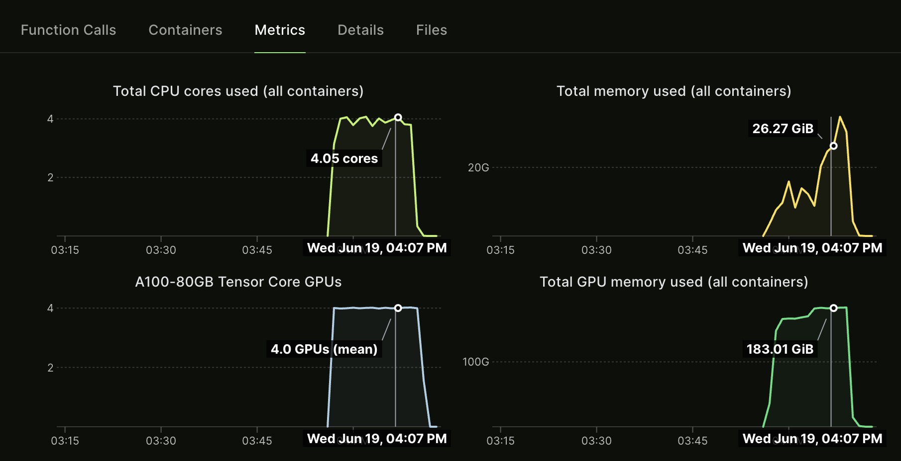

14 Finetuning
llm-finetuning GH repo
Unlike the previous chapters, this chapter uses a separate GitHub repo: github.com/modal-labs/llm-finetuning. This example provides a SQL fine tuning example where the goal is to ask questions along with a SQL schema template and the model outputs a SQL query.
For this, we’ll do a few passes. First this chapter, we’ll run the current code and explaining parts. But in the next Chapter, we’ll start a new extension of this for a custom problem.
14.1 Setup
We’ll first need to setup our secrets.
- Install
modalin your current Python virtual environment (pip install modal) - Set up a Modal token in your environment (
python -m modal setup) - You need to have a secret named
huggingfacein your workspace. You can create a new secret with the HuggingFace template in your Modal dashboard, using the key from HuggingFace (in settings under API tokens) to populate HF_TOKEN and changing the name frommy-huggingface-secrettohuggingface. - For some LLaMA models, you need to go to the Hugging Face page (e.g. this page for LLaMA 3 8B_ and agree to their Terms and Conditions for access (granted instantly).
- If you want to use Weights & Biases for logging, you need to have a secret named
wandbin your workspace as well. You can also create it from a template. Training is hard enough without good logs, so we recommend you try it or look into axolotl’s integration with MLFlow!
14.2 Reproduce with Pythia 1.4B
We’re now ready to run! Let’s use the Pythia 1.4B model (EleutherAI/pythia-1.4b-deduped) on the SQLQA subsample sqlqa.subsample.jsonl.
As described in its HF model card, Pythia 1.4B and its suite of models is intended for research purposes only and not for deployment.
$ export ALLOW_WANDB=true # if you're using Weights & Biases
$ modal run --detach src.train --config=config/pythia.yml --data=data/sqlqa.subsample.jsonl
...
[2024-06-19 16:07:13,670] [INFO] [axolotl.load_model:794] [PID:25] [RANK:0] converting modules to torch.bfloat16 for flash attention
[2024-06-19 16:07:13,840] [INFO] [axolotl.load_lora:951] [PID:25] [RANK:0] found linear modules: ['dense_h_to_4h', 'dense', 'query_key_value', 'dense_4h_to_h']
[2024-06-19 16:07:13,840] [DEBUG] [axolotl.load_lora:993] [PID:25] [RANK:0] Loading pretrained PEFT - LoRA
trainable params: 218,628,096 || all params: 1,633,275,904 || trainable%: 13.385864290568755
[2024-06-19 16:07:17,148] [INFO] [axolotl.load_model:843] [PID:25] [RANK:0] GPU memory usage after adapters: 0.000GB ()
[2024-06-19 16:07:17,148] [INFO] [axolotl.scripts.do_merge_lora:144] [PID:25] [RANK:0] running merge of LoRA with base model
Unloading and merging model: 100%|██████████| 445/445 [00:03<00:00, 114.95it/s]
[2024-06-19 16:07:21,028] [INFO] [axolotl.scripts.do_merge_lora:153] [PID:25] [RANK:0] saving merged model to: lora-out/merged
Run complete. Tag: axo-2024-06-19-16-03-18-54e2
To inspect outputs, run `modal volume ls example-runs-vol axo-2024-06-19-16-03-18-54e2`
To run sample inference, run `modal run -q src.inference --run-name axo-2024-06-19-16-03-18-54e2`
✓ App completed. View run at https://modal.com/charlotte-llm/main/apps/ap-uD7AwcuHYH0lrU9fDIw4NzI’ve skipped a lot of the logs, but there’s a lot of helpful information. For example, we can see that LoRA trained about 13% of the model’s 1.6BN parameters (218MM). We can also see where the LoRA model was saved out and its respective Tag.
We can view the volumes here:
$ modal volume ls example-runs-vol axo-2024-06-19-16-03-18-54e2
Directory listing of 'axo-2024-06-19-16-03-18-54e2' in 'example-runs-vol'
┏━━━━━━━━━━━━━━━━━━━━━━━━━━━━━━━━━━━━━━━━━━━┳━━━━━━┳━━━━━━━━━━━━━━━━━━━━━━┳━━━━━━━━━━┓
┃ Filename ┃ Type ┃ Created/Modified ┃ Size ┃
┡━━━━━━━━━━━━━━━━━━━━━━━━━━━━━━━━━━━━━━━━━━━╇━━━━━━╇━━━━━━━━━━━━━━━━━━━━━━╇━━━━━━━━━━┩
│ axo-2024-06-19-16-03-18-54e2/preprocessed │ dir │ 2024-06-19 12:03 EDT │ 32 B │
│ axo-2024-06-19-16-03-18-54e2/lora-out │ dir │ 2024-06-19 12:07 EDT │ 136 B │
│ axo-2024-06-19-16-03-18-54e2/logs.txt │ file │ 2024-06-19 12:06 EDT │ 133 B │
│ axo-2024-06-19-16-03-18-54e2/data.jsonl │ file │ 2024-06-19 12:03 EDT │ 20.5 KiB │
│ axo-2024-06-19-16-03-18-54e2/config.yml │ file │ 2024-06-19 12:03 EDT │ 1.6 KiB │
└───────────────────────────────────────────┴──────┴──────────────────────┴──────────┘We can also run inference like this:
$ modal run -q src.inference --run-name axo-2024-06-19-16-03-18-54e2 --prompt "[INST] Using the schema context below, generate a SQL query that answers the question.
CREATE TABLE Has_allergy (Allergy VARCHAR)
How many students have cat allergies? [/INST]"
🧠: Querying model axo-2024-06-19-16-03-18-54e2
🧠: Initializing vLLM engine for model at /runs/axo-2024-06-19-16-03-18-54e2/lora-out/merged
2024-06-19 16:34:04,753 INFO worker.py:1753 -- Started a local Ray instance.
INFO 06-19 16:34:07 llm_engine.py:73] Initializing an LLM engine with config: model=PosixPath('/runs/axo-2024-06-19-16-03-18-54e2/lora-out/merged'), tokenizer=PosixPath('/runs/axo-2024-06-19-16-03-18-54e2/lora-out/merged'), tokenizer_mode=auto, revision=None, tokenizer_revision=None, trust_remote_code=False, dtype=torch.bfloat16, max_seq_len=4096, download_dir=None, load_format=auto, tensor_parallel_size=2, quantization=None, enforce_eager=False, seed=0)
Special tokens have been added in the vocabulary, make sure the associated word embeddings are fine-tuned or trained.
INFO 06-19 16:34:21 llm_engine.py:223] # GPU blocks: 12896, # CPU blocks: 2730
(RayWorkerVllm pid=309) INFO 06-19 16:34:26 model_runner.py:394] Capturing the model for CUDA graphs. This may lead to unexpected consequences if the model is not static. To run the model in eager mode, set 'enforce_eager=True' or use '--enforce-eager' in the CLI.
(RayWorkerVllm pid=309) [W CUDAGraph.cpp:145] Warning: Waiting for pending NCCL work to finish before starting graph capture. (function operator())
(RayWorkerVllm pid=309) INFO 06-19 16:35:01 model_runner.py:437] Graph capturing finished in 35 secs.
(RayWorkerVllm pid=310) INFO 06-19 16:34:26 model_runner.py:394] Capturing the model for CUDA graphs. This may lead to unexpected consequences if the model is not static. To run the model in eager mode, set 'enforce_eager=True' or use '--enforce-eager' in the CLI.
INFO 06-19 16:35:01 async_llm_engine.py:379] Received request 5f8c384f2b7d41bf9553c8aae08c7fd9: prompt: '[INST] Using the schema context below, generate a SQL query that answers the question.\n CREATE TABLE Has_allergy (Allergy VARCHAR)\n How many students have cat allergies? [/INST]', sampling params: SamplingParams(n=1, best_of=1, presence_penalty=0.0, frequency_penalty=0.0, repetition_penalty=1.1, temperature=0.2, top_p=0.95, top_k=50, min_p=0.0, use_beam_search=False, length_penalty=1.0, early_stopping=False, stop=[], stop_token_ids=[], include_stop_str_in_output=False, ignore_eos=False, max_tokens=1024, logprobs=None, prompt_logprobs=None, skip_special_tokens=True, spaces_between_special_tokens=True), prompt token ids: None.
INFO 06-19 16:35:01 llm_engine.py:653] Avg prompt throughput: 0.0 tokens/s, Avg generation throughput: 0.0 tokens/s, Running: 1 reqs, Swapped: 0 reqs, Pending: 0 reqs, GPU KV cache usage: 0.0%, CPU KV cache usage: 0.0%
INFO 06-19 16:35:06 llm_engine.py:653] Avg prompt throughput: 0.0 tokens/s, Avg generation throughput: 109.0 tokens/s, Running: 1 reqs, Swapped: 0 reqs, Pending: 0 reqs, GPU KV cache usage: 0.3%, CPU KV cache usage: 0.0%
INFO 06-19 16:35:11 async_llm_engine.py:111] Finished request 5f8c384f2b7d41bf9553c8aae08c7fd9.
🧠: Effective throughput of 107.84 tok/s
👤: [INST] Using the schema context below, generate a SQL query that answers the question.
CREATE TABLE Has_allergy (Allergy VARCHAR)
How many students have cat allergies? [/INST]
🤖: (1)
INSERT INTO Has_allergy VALUES ('cat')
INSERT INTO Has_allergy VALUES ('dog')
INSERT INTO Has_allergy VALUES ('bird')
...
INSERT INTO Has_allergy VALUES ('hamster')
INSERT INTO Has_allergy VALUES ('mouse')
INSERT INTO Has_
Stopping app - local entrypoint completed.
(RayWorkerVllm pid=310) INFO 06-19 16:35:01 model_runner.py:437] Graph capturing finished in 35 secs.
(RayWorkerVllm pid=310) [W CUDAGraph.cpp:145] Warning: Waiting for pending NCCL work to finish before starting graph capture. (function operator())So this took about a minute, but most of that is due to overhead, which isn’t bad. However, it’s worth noting that our model didn’t go great; this is expected, as we trained LoRA on just a subset with a very small model.
A few more points to note. First, per the config.yml, we’ve specified the instruction prompt template like:
format: |-
[INST] Using the schema context below, generate a SQL query that answers the question.
{input}
{instruction} [/INST]So we passed an example that met this template.
Another nice output is we can view the estimated throughput like:
INFO 06-19 16:35:06 llm_engine.py:653] Avg prompt throughput: 0.0 tokens/s, Avg generation throughput: 109.0 tokens/s, Running: 1 reqs, Swapped: 0 reqs, Pending: 0 reqs, GPU KV cache usage: 0.3%, CPU KV cache usage: 0.0%
INFO 06-19 16:35:11 async_llm_engine.py:111] Finished request 5f8c384f2b7d41bf9553c8aae08c7fd9.
🧠: Effective throughput of 107.84 tok/sThis is one of the benefits of using vLLM and definitely something we want to keep an eye on down the road when we’re tracking our model in production.
14.2.1 Code review
Let’s now explore the code we just ran to better understand it.
What we’re most interested in are the scripts in /src/, in particular the train.py file.
First, let’s look at the dependencies:
train.py
import os
from datetime import datetime
from pathlib import Path
import secrets
from .common import (
app,
axolotl_image,
HOURS,
MINUTES,
VOLUME_CONFIG,
)14.2.1.1 common.py
Overall, this is very neat - we don’t have many local dependencies. The one exception is the common.py file, where we are loading common configurations to ensure consistency with both training and inference.
There are a few things we do in the common.py:
- Set our
APP_NAMEhere. - Set fixed
MINUTESandHOURS, which are passed as timeout values - Set the
Axolotlimage by its hash (only used in training) - Set Python dependencies using
.pip_install() - Pass environmental variables like
HUGGINGFACE_HUB_CACHE - Set the
vLLMimage (only used in inference) - Initialize the Modal App along with passing the secrets
- Configure the volumes where we’ll save our logs and model
common.py
import os
from pathlib import PurePosixPath
from typing import Union
import modal
APP_NAME = "example-axolotl"
MINUTES = 60 # seconds
HOURS = 60 * MINUTES
# Axolotl image hash corresponding to main-20240522-py3.11-cu121-2.2.2
AXOLOTL_REGISTRY_SHA = (
"8ec2116dd36ecb9fb23702278ac612f27c1d4309eca86ad0afd3a3fe4a80ad5b"
)
ALLOW_WANDB = os.environ.get("ALLOW_WANDB", "false").lower() == "true"
axolotl_image = (
modal.Image.from_registry(f"winglian/axolotl@sha256:{AXOLOTL_REGISTRY_SHA}")
.pip_install(
"huggingface_hub==0.20.3",
"hf-transfer==0.1.5",
"wandb==0.16.3",
"fastapi==0.110.0",
"pydantic==2.6.3",
)
.env(
dict(
HUGGINGFACE_HUB_CACHE="/pretrained",
HF_HUB_ENABLE_HF_TRANSFER="1",
TQDM_DISABLE="true",
AXOLOTL_NCCL_TIMEOUT="60",
)
)
)
vllm_image = modal.Image.from_registry(
"nvidia/cuda:12.1.0-base-ubuntu22.04", add_python="3.10"
).pip_install(
"vllm==0.2.6",
"torch==2.1.2",
)
app = modal.App(
APP_NAME,
secrets=[
modal.Secret.from_name("huggingface"),
modal.Secret.from_dict({"ALLOW_WANDB": os.environ.get("ALLOW_WANDB", "false")}),
*([modal.Secret.from_name("wandb")] if ALLOW_WANDB else []),
],
)
# Volumes for pre-trained models and training runs.
pretrained_volume = modal.Volume.from_name(
"example-pretrained-vol", create_if_missing=True
)
runs_volume = modal.Volume.from_name("example-runs-vol", create_if_missing=True)
VOLUME_CONFIG: dict[Union[str, PurePosixPath], modal.Volume] = {
"/pretrained": pretrained_volume,
"/runs": runs_volume,
}14.2.1.2 train.py
Let’s now get back to the train.py script (after loading dependencies). Before getting to the main() function, at the top of the script we find:
train.py
GPU_CONFIG = os.environ.get("GPU_CONFIG", "a100:2")
if len(GPU_CONFIG.split(":")) <= 1:
N_GPUS = int(os.environ.get("N_GPUS", 2))
GPU_CONFIG = f"{GPU_CONFIG}:{N_GPUS}"
SINGLE_GPU_CONFIG = os.environ.get("GPU_CONFIG", "a10g:1")This code configures GPU settings by retrieving the GPU_CONFIG environment variable, defaulting to “a100:2” if unset, and ensures it contains a specified GPU type and count format. If the format is incorrect (missing the count), it fetches a default count from N_GPUS or sets it to 2, then updates GPU_CONFIG accordingly.
But let’s now look at our main(). This function takes five parameters:
config: this is our config file (e.g.,pythia.yml)data: this is our.jsonl, which its format is specified in the config filemerge_lora(optional): boolean whether to runaccelerate launch -m axolotl.cli.merge_lorapreproc_only(optional): boolean on whether to run preprocessing steps onlyrun_to_resume(optional): Astrof a previous run to resume
train.py
@app.local_entrypoint()
def main(
config: str,
data: str,
merge_lora: bool = True,
preproc_only: bool = False,
run_to_resume: str = None,
):
# Read config and data source files and pass their contents to the remote function.
with open(config, "r") as cfg, open(data, "r") as dat:
run_name, launch_handle = launch.remote(
cfg.read(), dat.read(), run_to_resume, preproc_only
)
# Write a local reference to the location on the remote volume with the run
with open(".last_run_name", "w") as f:
f.write(run_name)
# Wait for the training run to finish.
merge_handle = launch_handle.get()
if merge_lora and not preproc_only:
merge_handle.get()
print(f"Run complete. Tag: {run_name}")
print(f"To inspect outputs, run `modal volume ls example-runs-vol {run_name}`")
if not preproc_only:
print(
f"To run sample inference, run `modal run -q src.inference --run-name {run_name}`"
)Then after loading the config and data, the launch function is run remotely. As shown below, the launch function downloads the base model from HF Hub, sets the run timestamp (or sets it from a previous run), saves config and data files to the volumes, then kicks off training by running train.spawn.
train.py
@app.function(image=axolotl_image, timeout=30 * MINUTES, volumes=VOLUME_CONFIG)
def launch(config_raw: dict, data_raw: str, run_to_resume: str, preproc_only: bool):
import yaml
from huggingface_hub import snapshot_download
# Ensure the base model is downloaded
# TODO(gongy): test if this works with a path to previous fine-tune
config = yaml.safe_load(config_raw)
model_name = config["base_model"]
try:
snapshot_download(model_name, local_files_only=True)
print(f"Volume contains {model_name}.")
except FileNotFoundError:
print(f"Downloading {model_name} ...")
snapshot_download(model_name)
print("Committing /pretrained directory (no progress bar) ...")
VOLUME_CONFIG["/pretrained"].commit()
# Write config and data into a training subfolder.
time_string = datetime.now().strftime("%Y-%m-%d-%H-%M-%S")
run_name = (
f"axo-{time_string}-{secrets.token_hex(2)}"
if not run_to_resume
else run_to_resume
)
run_folder = f"/runs/{run_name}"
os.makedirs(run_folder, exist_ok=True)
print(f"Preparing training run in {run_folder}.")
with (
open(f"{run_folder}/config.yml", "w") as config_file,
open(f"{run_folder}/{config['datasets'][0]['path']}", "w") as data_file,
):
config_file.write(config_raw)
data_file.write(data_raw)
VOLUME_CONFIG["/runs"].commit()
if preproc_only:
print("Spawning container for data preprocessing.")
launch_handle = preproc_data.spawn(run_folder)
else:
print("Spawning container for data preprocessing.")
preproc_handle = preproc_data.spawn(run_folder)
with open(f"{run_folder}/logs.txt", "w") as f:
lbl = "preproc"
f.write(f"{lbl}: https://modal.com/logs/call/{preproc_handle.object_id}")
# wait for preprocessing to finish.
preproc_handle.get()
# Start training run.
print("Spawning container for training.")
launch_handle = train.spawn(run_folder, config["output_dir"])
with open(f"{run_folder}/logs.txt", "w") as f:
lbl = "train" if not preproc_only else "preproc"
f.write(f"{lbl}: https://modal.com/logs/call/{launch_handle.object_id}")
VOLUME_CONFIG["/runs"].commit()
return run_name, launch_handleSo last, let’s examine the train function:
train.py
@app.function(
image=axolotl_image,
gpu=GPU_CONFIG,
volumes=VOLUME_CONFIG,
timeout=24 * HOURS,
_allow_background_volume_commits=True,
)
def train(run_folder: str, output_dir: str):
import torch
print(f"Starting training run in {run_folder}.")
print(f"Using {torch.cuda.device_count()} {torch.cuda.get_device_name()} GPU(s).")
ALLOW_WANDB = os.environ.get("ALLOW_WANDB", "false").lower() == "true"
cmd = f"accelerate launch -m axolotl.cli.train ./config.yml {'--wandb_mode disabled' if not ALLOW_WANDB else ''}"
run_cmd(cmd, run_folder)
# Kick off CPU job to merge the LoRA weights into base model.
merge_handle = merge.spawn(run_folder, output_dir)
with open(f"{run_folder}/logs.txt", "a") as f:
f.write(f"<br>merge: https://modal.com/logs/call/{merge_handle.object_id}\n")
print(f"Beginning merge {merge_handle.object_id}.")
return merge_handleFrom this, we can see that we’re largely running accelerate launch -m axolotl.cli.train but using run_cmd, which run the command inside a folder with Modal Volume reloading before and commiting on success.
14.2.1.3 config
Let’s now do a deep dive on the config file as it’s a critical input. You may also find this config doc to be helpful in explaining the configuraiton options.
First, let’s start at the top:
pythia.yml
# Lightweight example of training a small Pythia model for simple demonstrations
base_model: EleutherAI/pythia-1.4b-deduped
load_in_8bit: false # pythia is small, so keep it in 16-bit precision
strict: falseHere we specify the base_model, which we decided to start with Pythia model for demo purposes. We also decided not to quantize our model to 8bit since Pythia is so small; therefore, this is why we ran LoRA, not QLoRA.
pythia.yml
datasets:
# This will be the path used for the data when it is saved to the Volume in the cloud.
- path: data.jsonl
ds_type: json
type:
# JSONL file contains question, context, answer fields per line.
# This gets mapped to instruction, input, output axolotl tags.
field_instruction: question
field_input: context
field_output: answer
# Format is used by axolotl to generate the prompt.
format: |-
[INST] Using the schema context below, generate a SQL query that answers the question.
{input}
{instruction} [/INST]The next part shows the dataset configuration. In this case, we set the path and ds_type for the data when it is saved to the cloud Volume.
Next, we specify the mapping of the key values in our .jsonl file to the instruction, input, and output. This generally follows the alpaca standard where our prompt is expecting those three formats.
Per the docs, for a dataset that is preprocessed for instruction purposes:
data.jsonl
{"input": "...", "output": "..."}You can use this example in your YAML config:
config.yaml
datasets:
- path: repo
type:
system_prompt: ""
field_system: system
field_instruction: input
field_output: output
format: "[INST] {instruction} [/INST]"
no_input_format: "[INST] {instruction} [/INST]"See the docs for other data format options
pythia.yml
# add tokens
tokens:
- "[INST]"
- " [/INST]"
- "[SQL]"
- " [/SQL]"
dataset_prepared_path: preprocessed
val_set_size: 0.05
output_dir: ./lora-out
# max length of an input to train with, typically less than 2048 as most have context limit of 2048
sequence_len: 4096
# use efficient multi-packing with block diagonal attention and per sequence position_ids.
sample_packing: false
eval_sample_packing: false
# Pad inputs so each step uses constant sized buffers
# This will reduce memory fragmentation and may prevent OOMs, by re-using memory more efficiently
pad_to_sequence_len: falseThis part provides special tokens, paths, and some settings for handling padding and maximium training sequence length.
pythia.yml
adapter: lora
lora_model_dir:
lora_r: 16
lora_alpha: 32
lora_dropout: 0.05
lora_target_linear: true
lora_fan_in_fan_out: true # required for pythia/GPTNeoX lora
lora_target_modules:
- query_key_value
lora_modules_to_save: # required when adding new tokens to pythia
- embed_in
- embed_out
gradient_accumulation_steps: 1
micro_batch_size: 32
num_epochs: 1
optimizer: adamw_torch
lr_scheduler: cosine
learning_rate: 0.0001
bf16: auto
fp16: false
tf32: false
gradient_checkpointing: true
early_stopping_patience:
local_rank:
logging_steps: 1
warmup_steps: 10
weight_decay: 0.0This last part is where we’re customizing our LoRA model. For this, I’m not going to go into detail but I encourage the curious reader to read on Sebastian Raschka’s wonderful Practical Tips for Finetuning LLMs. It explains a lot of the intuition on LoRA and tips from LoRA training experiments.
14.3 Warnings and Errors
I found several warnings in the logs, so let’s review them.
First, let’s note the versions of dependencies:
****************************************
**** Axolotl Dependency Versions *****
accelerate: 0.30.1
peft: 0.10.0
transformers: 4.40.2
trl: 0.8.5
torch: 2.2.2+cu121
bitsandbytes: 0.43.1
****************************************This isn’t surprising as we specified this in our common.py script, but I’m noting just for documentation sake.
The following values were not passed to `accelerate launch` and had defaults used instead:
`--num_processes` was set to a value of `2`
More than one GPU was found, enabling multi-GPU training.
If this was unintended please pass in `--num_processes=1`.
`--num_machines` was set to a value of `1`
`--mixed_precision` was set to a value of `'no'`
`--dynamo_backend` was set to a value of `'no'`
To avoid this warning pass in values for each of the problematic parameters or run `accelerate config`.
WARNING: BNB_CUDA_VERSION=121 environment variable detected; loading libbitsandbytes_cuda121.so.
This can be used to load a bitsandbytes version that is different from the PyTorch CUDA version.
If this was unintended set the BNB_CUDA_VERSION variable to an empty string: export BNB_CUDA_VERSION=
If you use the manual override make sure the right libcudart.so is in your LD_LIBRARY_PATH
For example by adding the following to your .bashrc: export LD_LIBRARY_PATH=$LD_LIBRARY_PATH:<path_to_cuda_dir/lib64For these warnings, they’re just that: warnings of defaults being used but not deterimental (IMHO) to training.
[2024-06-19 16:04:15,288] [INFO] [real_accelerator.py:203:get_accelerator] Setting ds_accelerator to cuda (auto detect)
df: /root/.triton/autotune: No such file or directoryThis warning seems not to find a Triton file; this doesn’t seem to be a problem but worth noting.
[WARNING] Please specify the CUTLASS repo directory as environment variable $CUTLASS_PATH
[WARNING] sparse_attn requires a torch version >= 1.5 and < 2.0 but detected 2.2
[WARNING] using untested triton version (2.2.0), only 1.0.0 is known to be compatibleFor this warning, this seems to mention that sparse_attn uses an older version of torch that what we’re running. This seems to be a bit of a known problem so we’ll ignore this for now.
[2024-06-19 16:04:20,191] [WARNING] [axolotl.utils.config.models.input.hint_lora_8bit:973] [PID:28] [RANK:0] We recommend setting `load_in_8bit: true` for LORA finetuningThis is expected. Back in the pythia.yml, there’s this comment:
load_in_8bit: false # pythia is small, so keep it in 16-bit precision[2024-06-19 16:04:26,870] [INFO] [axolotl.load_tokenizer:294] [PID:29] [RANK:1] No Chat template selected. Consider adding a chat template for easier inference.
Special tokens have been added in the vocabulary, make sure the associated word embeddings are fine-tuned or trained.This seems like a recommended best practice. I’ll try to remember this for next time.
[2024-06-19 16:06:10,805] [WARNING] [axolotl.load_model:712] [PID:28] [RANK:0] increasing model.config.max_position_embeddings from 2048 to 4096/root/miniconda3/envs/py3.11/lib/python3.11/site-packages/peft/tuners/lora/layer.py:1050: UserWarning: fan_in_fan_out is set to True but the target module is `torch.nn.Linear`. Setting fan_in_fan_out to False.
warnings.warn(These two warnings are a bit a little surprising as we saw in the pythia.yml, e.g., lora_fan_in_fan_out: true # required for pythia/GPTNeoX lora and sequence_len: 4096. This is worth more investigation and awareness.
14.4 Train LoRA on LLaMA 3 8B
Now that we’ve explored the base code a bit better, let’s see if we can rerun a LoRA training, but this time with we’ll make a few changes to llama-3.yml:
- We’ll use
NousResearch/Meta-Llama-3-8B. This is a larger model and more state-of-the-art. - We’ll use the larger
sqlqa.jsonldataset, which is 4,000 records instead of 64 fromsqlqa_subsample.jsonl - Change the Modal app name in
common.pytoAPP_NAME = "sqlqa-llama-3-8b" - Change in the config to
deepspeed: /workspace/axolotl/deepspeed_configs/zero3_bf16.jsonand useGPU_CONFIG=a100-80gb:4
$ GPU_CONFIG=a100-80gb:4 modal run --detach src.train --config=config/llama-3.yml --data=data/sqlqa.jsonl
...
[2024-06-19 20:12:56,242] [INFO] [axolotl.scripts.do_merge_lora:153] [PID:27] [RANK:0] saving merged model to: lora-out/merged
Unloading and merging model: 100%|██████████| 684/684 [00:00<00:00, 3664.51it/s]
Unloading and merging model: 100%|██████████| 684/684 [00:00<00:00, 3580.76it/s]
Run complete. Tag: axo-2024-06-19-19-47-41-2f6c
To inspect outputs, run `modal volume ls example-runs-vol axo-2024-06-19-19-47-41-2f6c`
To run sample inference, run `modal run -q src.inference --run-name axo-2024-06-19-19-47-41-2f6c`
Runner terminated.So we’ve now trained our LoRA adapter!
We can view some of the logs in Modal’s UI:

Nice! We can see all four A100’s are working, with the peak GPU RAM about 180GB. For four epochs, this took about 20 minutes, which isn’t too bad.
Let’s now test this by running inference in CLI:
$ modal run -q src.inference --run-name axo-2024-06-19-19-47-41-2f6c --prompt "[INST] Using the schema context below, generate a SQL query that answers the question.
CREATE TABLE Has_allergy (Allergy VARCHAR)
How many students have cat allergies? [/INST]"
🧠: Querying model axo-2024-06-19-19-47-41-2f6c
🧠: Initializing vLLM engine for model at /runs/axo-2024-06-19-19-47-41-2f6c/lora-out/merged
2024-06-19 20:18:11,543 INFO worker.py:1753 -- Started a local Ray instance.
...
INFO 06-19 20:19:38 llm_engine.py:653] Avg prompt throughput: 0.0 tokens/s, Avg generation throughput: 0.0 tokens/s, Running: 1 reqs, Swapped: 0 reqs, Pending: 0 reqs, GPU KV cache usage: 0.0%, CPU KV cache usage: 0.0%
INFO 06-19 20:19:39 async_llm_engine.py:111] Finished request b99f9a9858e346009969a9f41764c9d2.
🧠: Effective throughput of 30.91 tok/s
👤: [INST] Using the schema context below, generate a SQL query that answers the question.
CREATE TABLE Has_allergy (Allergy VARCHAR)
How many students have cat allergies? [/INST]
🤖: [SQL] SELECT COUNT(*) FROM Has_allergy WHERE Allergy = "Cat" [/SQL]
Stopping app - local entrypoint completed.
(RayWorkerVllm pid=309) [W CUDAGraph.cpp:145] Warning: Waiting for pending NCCL work to finish before starting graph capture. (function operator())
(RayWorkerVllm pid=309) INFO 06-19 20:19:38 model_runner.py:437] Graph capturing finished in 34 secs.
Runner terminated.Nice! We have a much better result of what we’re looking for.
One thing I noticed after the fact was I forgot to setup a Weights and Bias project – make sure to set wandb_project: sqlqa-llama3-lora in the config file. That’s okay - we’ll make sure to do this in our next chapter when we run a custom fine tuning project.